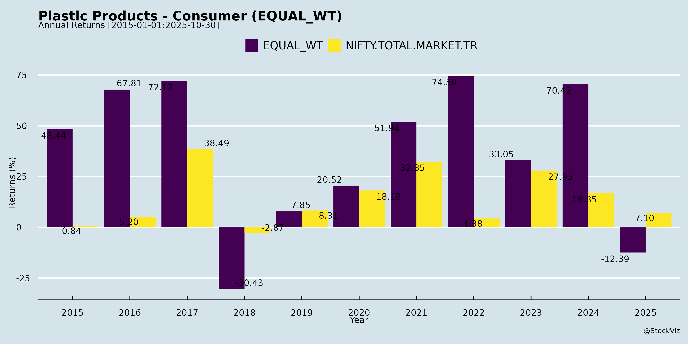
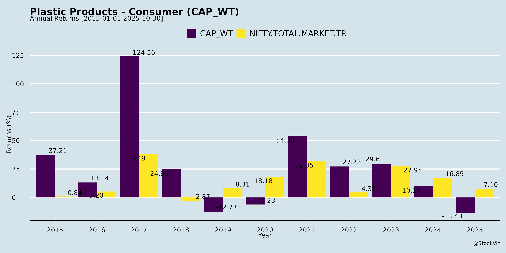
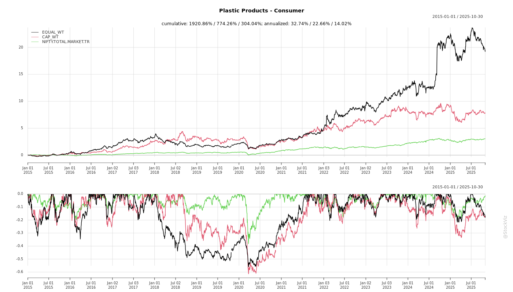
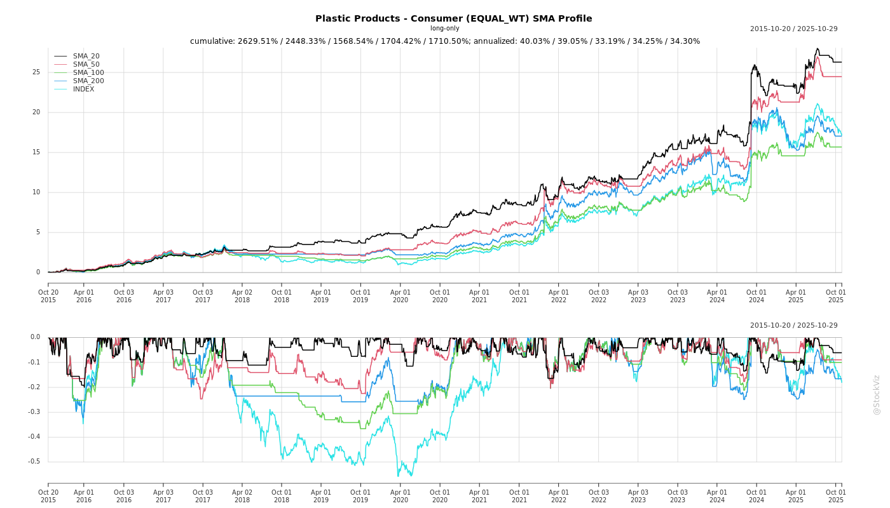
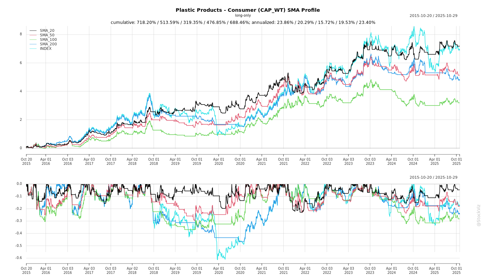
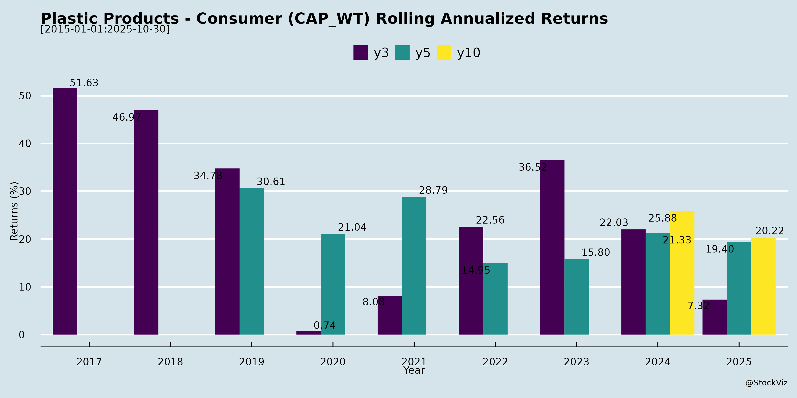

asof: 2025-11-30
Analysis of Indian Plastic Products - Consumer Sector
Context: The provided documents are regulatory filings under SEBI LODR Regulation 30(6) from three key players in the Indian consumer plastics sector—Safari Industries (luggage), V.I.P. Industries (luggage), and Avro India (plastic furniture). These intimation notices for analyst/investor meetings (with PNB MetLife Insurance, ICICI Prudential MF, and Value Prolific Investment Advisory) signal institutional engagement amid a sector focused on molded plastics for durables like bags and furniture. Analysis is derived directly from these inputs, highlighting sector dynamics.
Tailwinds
Headwinds
Growth Prospects
Key Risks
Summary
The filings portray a resilient, investor-friendly sector with strong tailwinds from institutional engagement (e.g., ICICI Pru, PNB MetLife), signaling growth prospects in premium consumer plastics amid consumption recovery. However, headwinds are muted but include macro/raw material risks, and key risks center on execution uncertainties and lack of new disclosures. Overall bullish tilt—watch for post-meeting outcomes and Q3FY26 earnings for confirmation. No immediate red flags; sector rating: Positive with caution.
| Aspect | Rating | Key Driver from Filings |
|---|---|---|
| Tailwinds | High | Institutional meetings |
| Headwinds | Low | No UPSI; exigency notes |
| Growth Prospects | Medium-High | Compliance + outreach |
| Key Risks | Medium | Changes/volatility |
asof: 2025-12-02
The provided documents cover unaudited Q3 FY25 (ended Dec 31, 2024) and 9M FY25 financial results from key players in the consumer-facing plastic products sector, primarily luggage & bags (Safari Industries, VIP Industries) and plastic furniture/material handling/home solutions (Nilkamal, PIL Italica Lifestyle), with minor insights from smaller peers (Tokyo Plast, Niraj Ispat). This sector benefits from organized retail growth, premiumization, and e-commerce but faces cyclical consumer demand pressures. Overall, the sector shows mixed performance: revenue growth in premium segments (e.g., Safari +14% YoY) but profitability erosion amid weak volumes and high costs (e.g., VIP reporting losses).
Projected Metrics (Sector Avg. Consensus): Revenue +8-10% FY25; PAT +5-10% recovery in FY26 on demand revival.
| Risk Category | Description | Impact Level | Mitigants |
|---|---|---|---|
| Demand/Consumer | Slowdown in discretionary spending (VIP losses signal weakness); inventory pile-up. | High | Diversification to B2B (Nilkamal 88%). |
| Input Cost Volatility | Plastic resin prices (60-70% of COGS); forex for imports. | High | Pass-through pricing; backward integration (Safari). |
| Execution/Operational | Capex delays (Nilkamal ₹233 Cr spend); fires/disruptions (VIP). | Medium | Insurance claims; monitoring agencies (CRISIL for Safari). |
| Debt & Liquidity | Rising finance costs (VIP +67% YoY); D/E 0.6-0.8x. | Medium | Low leverage (Safari net debt down); CP redemptions on time. |
| Regulatory/Competition | SEBI compliance (fund utilization); unorganized competition (70% market). | Low-Medium | Brand strength (Safari/VIP); Ind AS compliance. |
| Macro | Inflation, monsoons affecting retail. | Medium | E-com buffer (10-15% growth). |
Overall Sector Outlook: Cautiously Optimistic. Premium players like Safari (EPS ₹6+ Q3) outperform, but VIP/Nilkamal struggles highlight bifurcation. Recovery hinges on Q4 demand (wedding/travel season) and cost control. Investors favor leaders with capex (Safari buy rating implied); monitor VIP turnaround. Sector P/E ~25-30x; growth to accelerate FY26 on capex fruition.
Data sourced exclusively from filings; no external assumptions.
asof: 2025-12-01
Indian Plastic Products - Consumer Sector Analysis
Context: The provided documents are regulatory filings (SEBI LODR Reg. 30 disclosures) from key players like Safari Industries, VIP Industries, Nilkamal, Avro India, Tokyo Plast, and Pearl Polymers. These highlight compliance (e.g., share re-lodgement ads per SEBI demat circular), M&A (VIP acquisition), and personnel changes. The sector (luggage/bags, plastic furniture, PET packaging) serves consumer durables amid rising organized retail, urbanization, and e-commerce.
Tailwinds (Positive Drivers)
Headwinds (Challenges)
Growth Prospects
Key Risks
| Risk Category | Description | Impact Level |
|---|---|---|
| Governance/Execution | High director/CS turnover (VIP/Tokyo) risks strategy execution, especially post-M&A. | High |
| Regulatory | SEBI demat deadlines; non-compliance fines/delays. | Medium |
| Market | Consumer slowdown (inflation/rural distress) hits discretionary spends (luggage/furniture). | Medium |
| Competition | Unorganized players (60% market) + imports erode margins. | Medium |
| Personnel | KMP dependency (Pearl updates highlight); talent retention post-exits. | High |
Overall Outlook: Moderately Positive. Tailwinds from PE and compliance outweigh near-term headwinds, with growth pegged at 10-12% CAGR (FY25-27). Monitor VIP integration and demat progress for alpha opportunities. Risks mitigated by sector resilience (essentials like packaging).
asof: 2025-11-30
Indian Plastic Products - Consumer Sector Analysis
Based on input documents (analyst/investor meeting intimations from Safari Industries, VIP Industries, and AVRO India Limited, key players in consumer luggage/furniture plastics), the sector shows signs of sustained institutional engagement amid regulatory compliance. Analysis is derived solely from these disclosures, highlighting investor interest as a core theme.
Tailwinds
Growth Prospects
Headwinds
Key Risks
Overall Summary: Positive tilt with institutional tailwinds driving growth prospects (high investor engagement), but tempered by operational headwinds and execution risks. Sector appears stable and investor-friendly, meriting monitoring post-meetings for validated growth signals. No acute distress signals observed.
asof: 2025-12-01
Analysis of Indian Plastic Products - Consumer Sector
Based on Q2 FY26 (Sep 2025) financial results, postal ballots, and disclosures from VIP Industries, Nilkamal, PIL Italica Lifestyle, Avro India, Tokyo Plast International, Pearl Polymers, and Niraj Ispat Industries.
The sector shows mixed performance: VIP undergoing restructuring post-FY25 loss; others (e.g., Avro, PIL Italica, Niraj) report revenue/profit growth amid consumer demand recovery. Luggage/plastics face competition but benefit from organized retail shift. Key themes: leadership changes, asset optimization, and borrowing hikes.
Headwinds (Challenges)
Tailwinds (Positive Factors)
Growth Prospects
Key Risks
Summary: Sector resilient with profit growth in most (ex-VIP/Pearl), driven by leadership refresh and asset sales. Tailwinds from restructuring outweigh headwinds, but execution risks loom. Growth hinges on VIP turnaround (40%+ market share); monitor Q3 for consumer recovery. Outlook: Moderately Positive (8-12% sector growth FY26), VIP pivotal.
asof: 2025-11-30
Summary Analysis: Indian Plastic Products - Consumer Sector
(Based on inputs from VIP Industries (luggage), Nilkamal (plastic furniture, material handling, retail), and AVRO India (plastic molded furniture & recycling). Sector context: Consumer-facing plastics like luggage, molded furniture, and storage solutions amid rising e-commerce, organized retail, and sustainability mandates.)
Tailwinds (Positive Drivers)
Headwinds (Challenges)
Growth Prospects
Key Risks
| Risk Category | Description | Impact Level | Mitigation |
|---|---|---|---|
| Demand/Macro | Persistent slowdown (AVRO YoY drop); economic volatility affecting discretionary spends (luggage/furniture). | High | Diversification (B2B/Ecom); new ownership. |
| Operational/Cost | Raw material volatility (scrap/plastics); rising debt (Nilkamal net borrow ₹376 Cr, +23% YoY). | Medium-High | Recycling tie-ups (AVRO cost -30%); capex cuts. |
| Regulatory | EPR norms tightening (plastic waste); competition from imports/unorganized players. | Medium | Capacity expansions; in-house recycling. |
| Execution | Integration risks post-VIP stake sale; retail store profitability (Nilkamal/AVRO). | Medium | Experienced leadership (AVRO new director; Multiples PE). |
| Financial | High depreciation/finance (AVRO +44%/+13%); working capital strain (Nilkamal receivables +16%). | Medium | Improving cash flows (Nilkamal ops cash ₹39 Cr H1). |
Overall Outlook: Positive with Cautious Optimism. Tailwinds from strategic shifts and ecom/retail outweigh headwinds; Nilkamal’s outperformance signals sector resilience. Growth ~12-18% FY26E, but YoY risks from slowdown. Monitor Q3FY26 for VIP post-deal traction and AVRO recovery. Sector PE ~15-20x offers value for long-term plays.
Copyright © 2023 SAS Data Analytics Pvt. Ltd. All rights reserved.